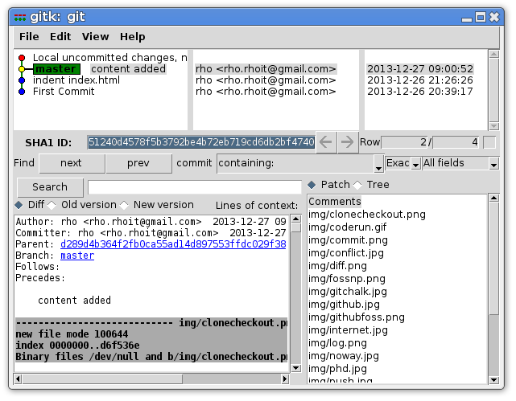
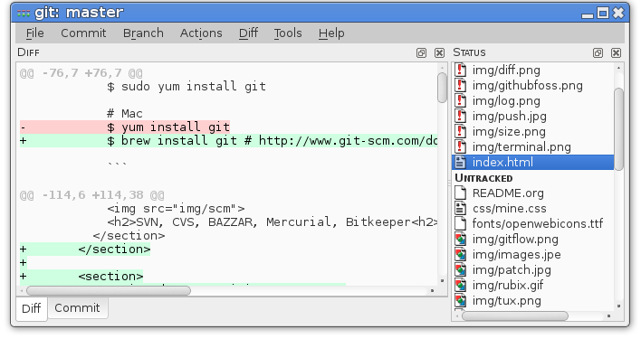
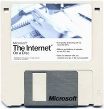

git(hub/
foss-np/*)?
Fast Forward »
git version 1.8.5
Made using reveal.js
Default -
Sky -
Beige -
Simple -
Serif -
Night
Moon -
Simple -
Solarized
भन्नाले!
open source, distributed version control system designed for speed and efficiency
Bit, History!


SVN, CVS, BAZZAR, Mercurial, Bitkeeper
Story of
Diff & Patch


Git नै किन?
the Stupid Content Tracker
- said by creator
Distributed
Simple
Fast »
के तपाईँ..

Code गर्नुहुन्छ ?
Why Do U Code?
Assignments/ Project
खोजेको पाइएन?
भेटे पनि #!@


Basic Commands
- git init
- git add
- git commit
- git branch
- git checkout
- git merge
Basic Workflow
- Edit Files
- Stage the changes
- Review your changes
- Commit the changes
Demo

github
Social Coding
foss-np
Git Vs. Others
Advantage of Git
- Works Offline
- Every clone is a backup
- Easy Branch/Merge
- Diff Storage
- Works Offline
- Every clone is a backup
- Easy Branch/Merge
- Diff Storage


More Commands
- git clone
- git status
- git remote
- git push
- git pull
- git log
Tips & Tricks
Custom Shell Prompt
github.com/git/git/master/contrib/completion/git-prompt.sh
gitk
git-cola
gist
gist.github.com
ssh-keys
Also checkout
$ git bz
Bugzillia integration
“After all GIT is just a tool!
Fool with the tool is still a Fool!”

Fool with the tool is still a Fool!”